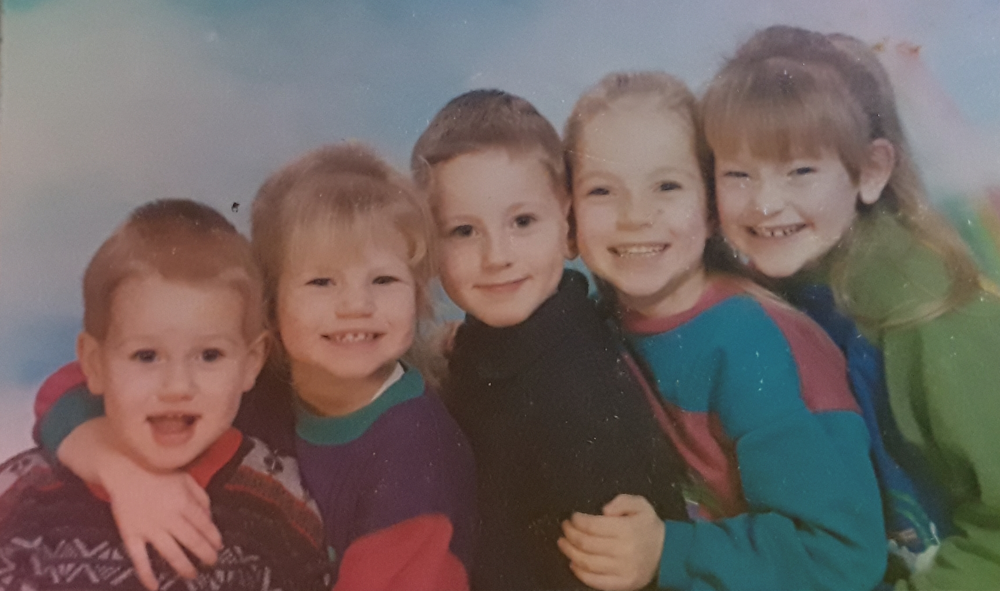
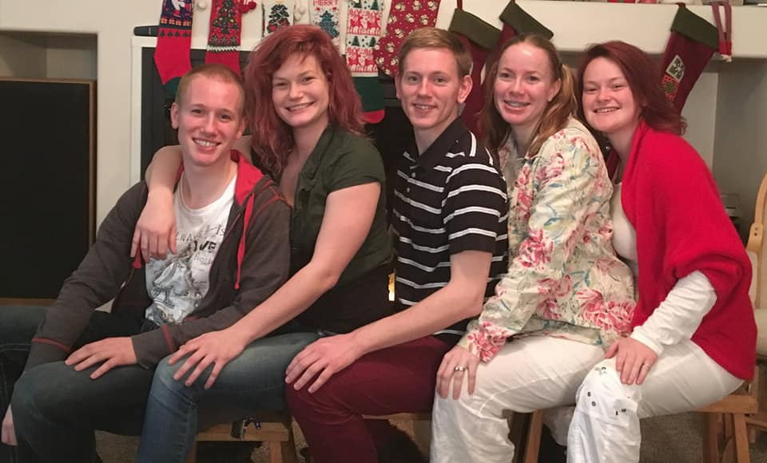

Introduction
My name is Jordi Kloosterboer. This is my fifth semester at BYU-I. I am majoring in Computer Engineering and my current permanent address is in West Valley City, UT. However, I was born in the Netherlands and have spent considerable time there, in England, and in Colorado. The pictures below show my siblings where I am the youngest. The picture where we are younger of was taken circa 2000, and the picture where we are older was taken in 2017. These days I like to research my Dutch ancestry, play League of Legends, read fantasy books, and watch movies on the big streaming platforms.
